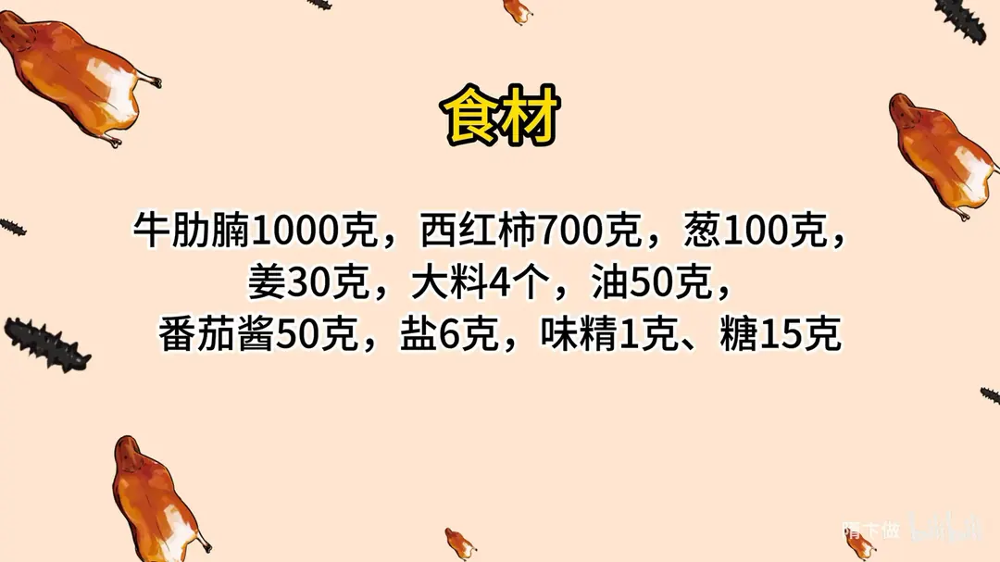
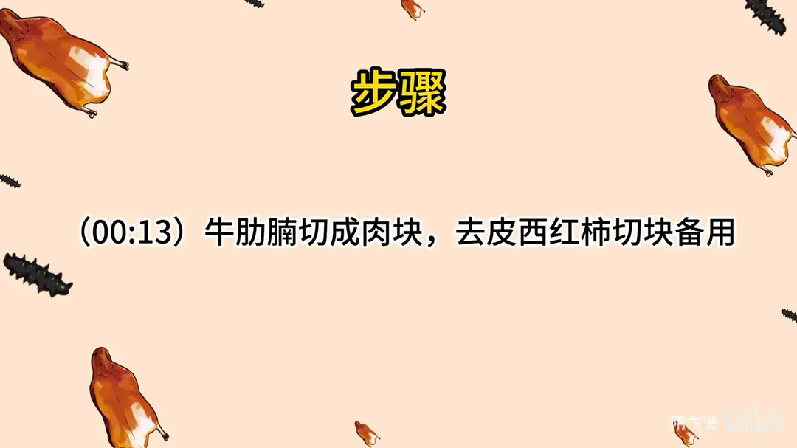
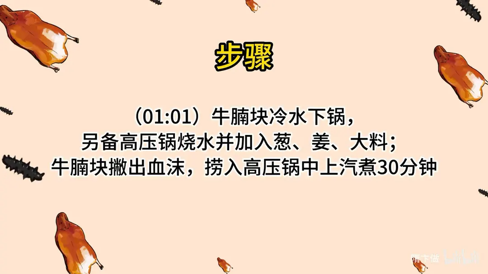
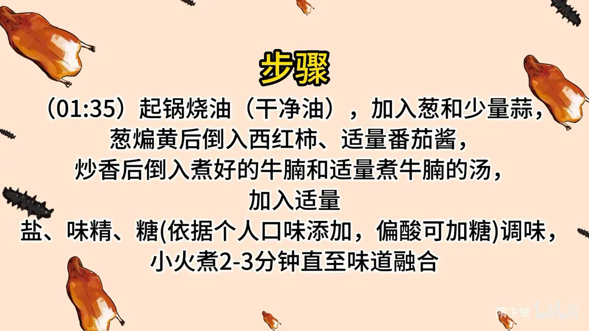
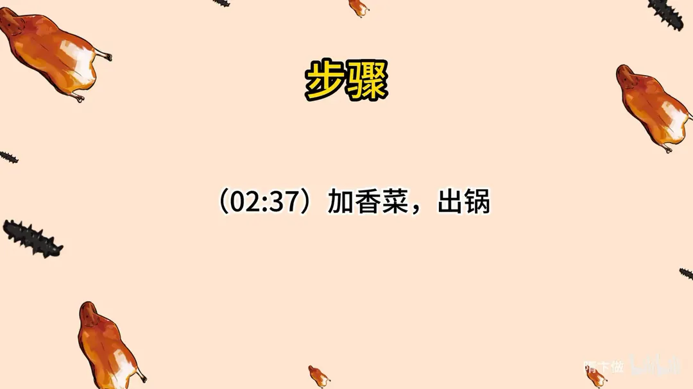

番茄炖牛腩
隋卞一做。牛肋腩 1000g 切块，冷水下锅撇净血沫后捞入高压锅，配葱姜大料上汽压 30 分钟。另起锅用干净油把葱煸黄，下 700g 去皮西红柿和 50g 番茄酱炒香，再连汤带肉回锅，加盐 6g、味精 1g、糖 15g 调味，小火煮 2-3 分钟到味道融合，撒香菜出锅。
原视频：https://www.bilibili.com/video/BV1RN4y1r7dt
食材
牛肋腩、西红柿 等 10 样
| 类别 | 用料 | 用量 |
|---|---|---|
| 主料 | 牛肋腩 | 1000g |
| 主料 | 西红柿（去皮） | 700g |
| 配料 | 葱 | 100g |
| 配料 | 姜 | 30g |
| 香料 | 大料 | 4 个 |
| 其他 | 油（干净油） | 50g |
| 调料 | 番茄酱 | 50g |
| 调料 | 盐 | 6g |
| 调料 | 味精 | 1g |
| 调料 | 糖 | 15g |
步骤
- 切配：牛肋腩切成肉块，西红柿去皮切块备用。
- 冷水下锅：牛腩块冷水下锅，煮至血沫浮出。
- 高压锅压肉：另备高压锅烧水，加入葱、姜、大料；牛腩块撇出血沫后捞入高压锅，上汽煮 30 分钟。
- 炒番茄：起锅烧油（干净油），加入葱和少量蒜，葱煸黄后倒入西红柿、适量番茄酱炒香。
- 合炖调味：倒入煮好的牛腩和适量煮牛腩的汤，加适量盐、味精、糖调味；依据个人口味添加，偏酸可加糖，小火煮 2-3 分钟直至味道融合。
- 出锅：加香菜，出锅。
讲解要点
难度：★★☆☆☆（流程简单，难在选对番茄和「全程不加水」）
为什么这么做
- 选牛肋腩（带筋带肉）、块切大一点：筋膜炖软后黏糯，瘦肉不柴，汤也才有厚度；炖煮会明显缩水，块切小了成品就碎。
- 西红柿要选掰开两瓣「反沙」的：这种果肉粉质、一炒就出沙出红油，番茄味和回口的甜味都足。
- 番茄酱≠番茄沙司：番茄酱是纯番茄浓缩，颜色红、番茄味正；沙司加了糖和香料，偏甜偏酸，会跑味。
- 葱煸到黄、用干净油：葱煸黄才有焦香的复合味；油要干净，油味重会把番茄的清香压掉。
- 全部用煮牛肉的原汤：原汤里是牛肉的鲜味物质，换成清水汤立刻就薄了，这也是「全程不加水」的真正含义。
- 少量糖：番茄多少带酸，糖把酸味柔和，味道更圆，不是吃甜。
- 小火只咕嘟两三分钟：肉已经压烂，这一段的目的是让葱香、番茄、牛肉三个味道融合，久煮反而散味。
容易翻车
- 血沫没撇干净就压，汤浑且腥。
- 用了番茄沙司，颜色和味道都不对。
- 中途嫌干加了清水，汤立刻寡淡。
- 番茄没炒出沙就下肉，汤是汤、肉是肉，融不到一起。
- 高压锅时间不足，牛肉不够软烂、也吸不进味。
原片尾卡





原片文案
AI 字幕校准稿
你们还不会做番茄炖牛腩？今天零失败的版本交给你们，有手就行。这个牛肉一定要选这个叫牛肋腩，带筋带肉，炖煮熟了以后是软滑的。
切法就很简单了，直接切块就行。煮完以后它会缩水，所以块可以适当地切大一点。去皮的西红柿给它切成大丁，这就不要求刀工了，一会儿可能会给它炖化。
那西红柿要选哪种？一掰开之后，两个横切面它会反沙的那种，吃着有西红柿的香，回口是西红柿的那种甜味。现在我们这个季节，那种可能不太好找。
前面的活儿干完，就要开始煮牛腩了。锅里边倒上干净水，牛腩倒进去，冷水下锅就可以了。等烧开之后把浮沫打一下；我们一会儿要用这个煮牛肉的汤，所以一定要把血水、血沫子撇干净。
旁边咱们拿这个高压锅，里面兑了点水，烧开倒上葱姜，搁俩大料瓣。很干净，直接捞到这个高压锅就行了。高压锅上气之后煮 30 分钟。到时间关火，全部打开，很软烂。
开火，砂锅里加上底油，很干净的砂锅就可以了，不能让这个油味把番茄味给冲淡。然后倒入葱片，葱一定要煸黄，能增加一个很香的复合味。
然后把西红柿放进去。现在的西红柿基本都没有什么西红柿味儿，怎么办呢？就要搁点番茄酱。你注意啊，这个是番茄酱，不是番茄沙司。炒香之后，再把炖好的牛肉倒进去。
里边所有用的这个水，全都是煮牛肉的那个汤。咱们要是用水的话，不可能把牛肉味炖得那么浓。里边放盐、味精一克、糖；番茄的多少它都会有点酸味，所以糖会把那个酸味柔和一些，定一个味。关小火，让它稍微咕嘟那么两三分钟，葱炝锅那个味道、番茄酱的味道、牛肉的味道全部混在一起，这就做好了。放香菜。
它不是一个很简单的番茄的味道，它是一个很复合的味道，有牛肉汤的香味，有葱蒜的复合味。汤喝起来是有厚重感的，一点都不寡淡、不单薄；牛肉软烂，把味道也吸得很足。煮的过程中全程不加水，要加就加煮牛肉的那个汤。这么做的上限高不是他最厉害的地方，下限也特别高，你就照这么做，再也不会做难吃了，下个面条、拌个米饭都非常好。